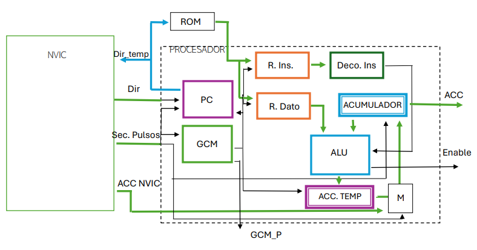
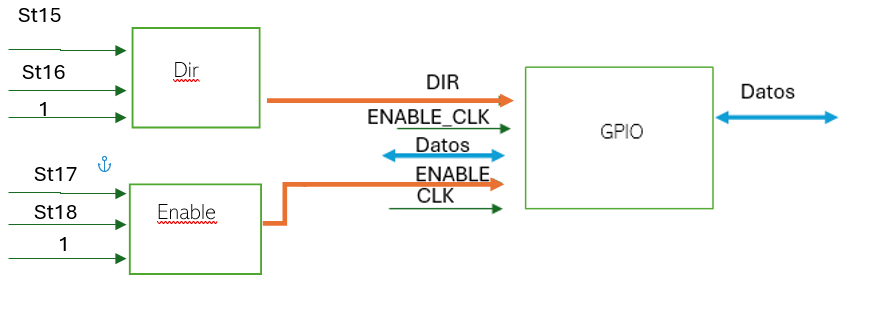
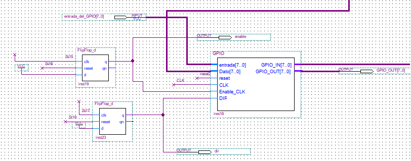
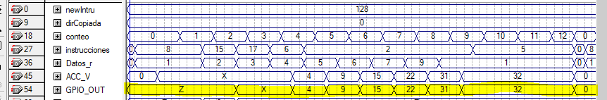
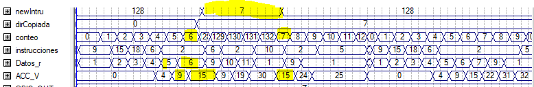

Descripción general
Arquitectura del Sistema
El sistema se compone de tres bloques principales: Procesador, NVIC y GPIO. El NVIC actúa como árbitro de interrupciones, pausando la GCM del procesador, gestionando el contexto y cediendo el control a la rutina de servicio (ISR).



Problema técnico
Requerimientos
El procesador original carecía de soporte para interrupciones externas. Se necesitaba un mecanismo capaz de reaccionar ante eventos asíncronos sin comprometer la integridad del estado del programa en ejecución.
- Detectar eventos externos mediante señales GPIO en modo entrada
- Detener la ejecución del programa sin pérdida de contexto
- Guardar el valor de PC + 1 y del registro ACC
- Cargar la dirección base de la rutina de servicio de interrupción (ISR)
- Restaurar completamente el estado del procesador al finalizar la ISR
Diseño del controlador
NVIC — FSM de 8 Estados
El NVIC fue implementado como una máquina de estados finitos (FSM) de 8 estados. La señal de pausa de la GCM se construyó con registros tipo T, garantizando estabilidad del bus durante la conmutación de contexto.

Periférico de E/S
Módulo GPIO
El GPIO fue desarrollado como módulo configurable en modo entrada o salida a través del ISA extendido. Durante la simulación se detectaron problemas de alta impedancia en el bus bidireccional, resueltos mediante un rediseño con lógica de habilitación de tres estados.

Conjunto de instrucciones
Extensión del ISA
Se añadieron instrucciones al conjunto base del procesador para soportar la gestión de interrupciones y el control del periférico GPIO.
| Instrucción | Opcode | Descripción | Afecta |
|---|---|---|---|
| EI | 0xE0 | Habilitar interrupciones globales | NVIC |
| DI | 0xE1 | Deshabilitar interrupciones globales | NVIC |
| CLRIRQ | 0xE2 | Limpiar bandera de interrupción pendiente | NVIC |
| GPIO_IN | 0xF0 | Configurar GPIO como entrada | GPIO |
| GPIO_OUT | 0xF1 | Configurar GPIO como salida | GPIO |
| CLK_EN | 0xF2 | Habilitar reloj del módulo GPIO | GPIO |
| CLK_DIS | 0xF3 | Deshabilitar reloj del módulo GPIO | GPIO |
Validación funcional
Simulaciones
Simulaciones funcionales en Quartus para verificar el comportamiento del sistema en los tres modos de operación críticos.

El GPIO se configura como entrada. El valor leído (60) se carga al procesador y se suma con 9 en memoria de datos, obteniendo 69 en el acumulador.

El GPIO se configura como salida, exponiendo el contenido del ACC en sus pines. Las señales coinciden una vez completada la configuración del periférico.

Con la interrupción habilitada se observa el almacenamiento de PC + 1 y el ACC. Al finalizar la ISR el sistema restaura el contexto y reanuda la ejecución normal.
Stack técnico
Tecnologías
Reflexión final
Conclusión
El uso de diagramas de bloques y máquinas de estados permitió describir la arquitectura del sistema de forma clara antes de escribir una sola línea de VHDL.
La integración de NVIC y GPIO profundizó el entendimiento de arquitectura digital a bajo nivel: manejo de interrupciones, guardado y restauración de contexto, y coordinación entre periféricos y unidad de control.
Documentación Completa
Arquitectura detallada, diagramas de estados, ISA y resultados de simulación.